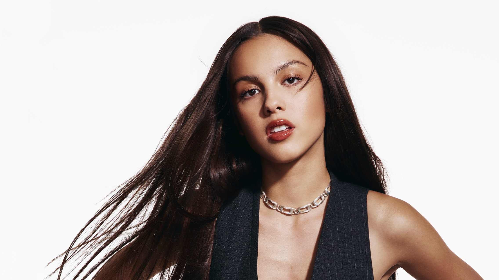
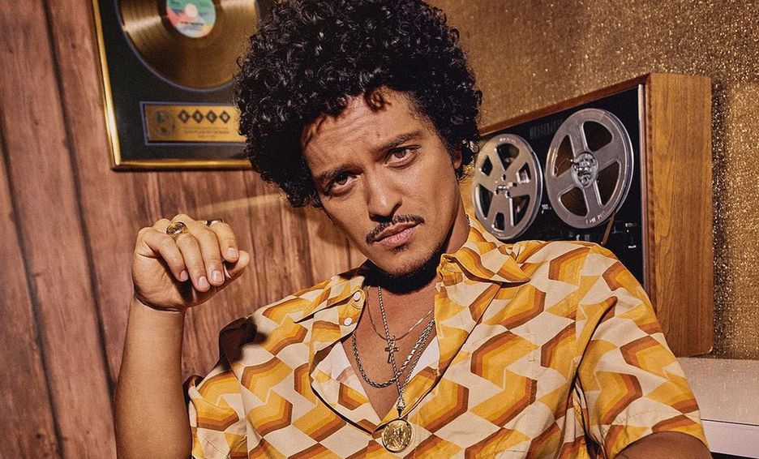
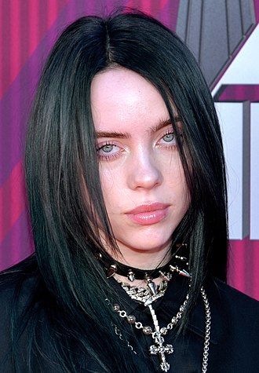
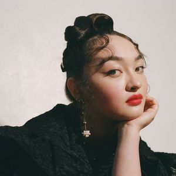
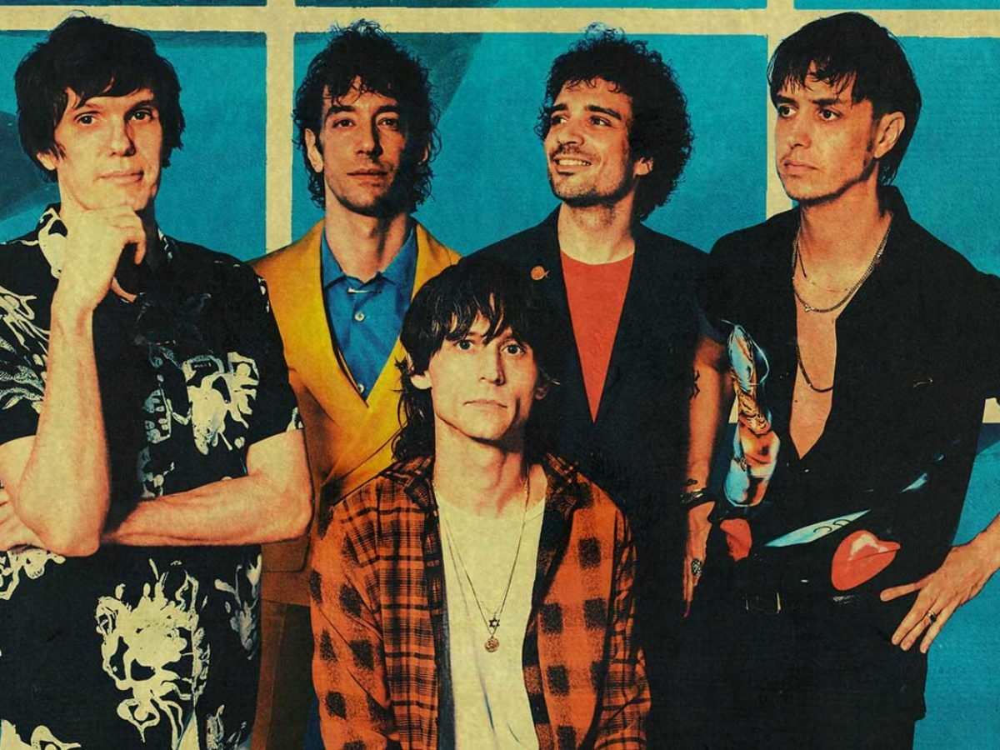
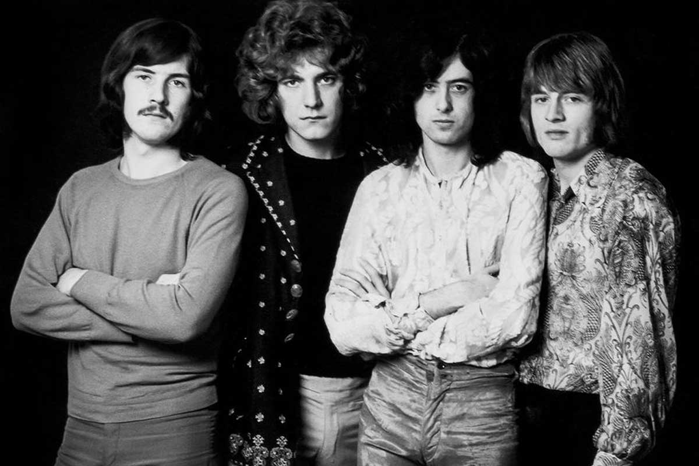
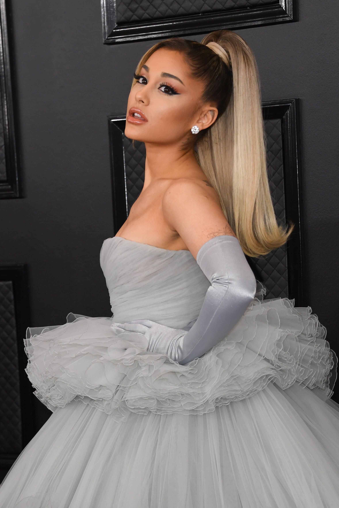

En esta pagina voy a enseñales los artistas, albumes y canciones que me gustan. Para que esta parte no se vea tan vacia voy a rellenar esto con un texto totalmente innecesario y lo unico que aporta es que esto no este tan vacio. Para que siguen leyendo este parrafo si ya les avise que este texto es relleno y no tiene nada más. Esto sigue siendo relleno para que no este vacio, aaaaa ya no se que mas poner. Bueno hasta aca el texto de relleno gracias por su atencion hasta luego, espero que tengan un lindo dia.
Artistas
Estos son algunos de los artistas y bandas que me gustan:
Olivia Rodrigo
Olivia Isabel Rodrigo (Murrieta, California; 20 de febrero de 2003) es una actriz, cantante y compositora estadounidense. Es conocida por interpretar a Paige Olvera en la serie original de Disney Channel, Bizaardvark y a Nini Salazar Roberts en la serie web original de Disney+, High School Musical: el musical: la serie.1 En 2021 se hizo mundialmente conocida por el primer sencillo «Drivers License» de su disco debut Sour, el cual debutó en el puesto número uno del Billboard 200. En 2022 se convirtió en ganadora de tres premios Grammy.
Bruno Mars
Peter Gene Hernandez (Honolulu, Hawái, 8 de octubre de 1985), conocido artísticamente como Bruno Mars, es un cantante, compositor, productor musical y bailarín estadounidense. Comenzó a crear música desde una edad muy temprana y actuó en muchos escenarios de su pueblo natal a lo largo de su niñez, realizando imitaciones. Se graduó de la escuela secundaria y se mudó a Los Ángeles, donde continuó con su carrera musical. Después de una temporada sin éxito con Motown Records, Mars firmó con Atlantic Records en 2009. Llegó a ser reconocido como artista en solitario después de prestar su voz y haber coescrito los coros para las canciones «Nothin' on You» de B.o.B, y «Billionaire» de Travie McCoy. También coescribió los éxitos internacionales «Right Round» de Flo Rida, «Wavin' Flag» de K'naan y «Fuck You!» de Cee Lo Green. El 4 de octubre de 2010 lanzó su álbum de estudio debut, Doo-Wops & Hooligans. Logró las mejores posiciones en el Billboard Hot 100 gracias a sus simples «Just the Way You Are» y «Grenade». Su segundo álbum fue Unorthodox Jukebox, con el que logró llegar al primer puesto de la misma lista con las canciones «Locked out of Heaven» y «When I Was Your Man». Vendió más de 170 millones de copias a nivel mundial, lo que lo hace uno de los artistas con más ventas. Siete de sus canciones se encuentran entre los simples más vendidos de la historia a nivel internacional.
Billie Eilish
Billie Eilish Pirate Baird O'Connell (Los Ángeles, California; 18 de diciembre de 2001) es una cantante y compositora estadounidense. Adquirió fama como artista cuando tenía 13 años, a raíz del sencillo «Ocean Eyes» que se publicó en 2015 en SoundCloud y volvió a lanzarse con un vídeo musical en YouTube en 2016, a la edad de 14 años, lo que la convirtió en un fenómeno viral. En 2017, publicó su EP Don't Smile at Me, producido por su hermano Finneas O'Connell. Su primer álbum de estudio, When We All Fall Asleep, Where Do We Go?, se publicó el 29 de marzo de 2019. Según la RIAA, a lo largo de su carrera ha logrado dos canciones con disco de platino: «Ocean Eyes» y «Lovely», esta última con Khalid, y siete sencillos con disco de oro. El álbum se llevó el Grammy al álbum del año y al mejor álbum de pop vocal en los premios de 2020. Asimismo, Eilish ganó el premio a la mejor artista novel y su éxito «Bad Guy» ganó la canción del año y grabación del año.
Tyler, The Creator
Tyler Gregory Okonma (Los Ángles, California; 6 de marzo de 1991), conocido artísticamente como Tyler, the Creator, es un rapero, compositor, productor, actor, escritor, director y diseñador estadounidense. Se hizo conocido en los inicios de los 2010 al ser el líder y cofundador del grupo de rap Odd Future, habiendo cantado y producido casi todas las canciones de la agrupación.1 Como solista, Tyler lanzó un mixtape y seis álbumes de estudio, todos producidos por él mismo. Después de una larga contribución en los primeros trabajos de Odd Future, Tyler lanzó su primer mixtape como solista, Bastard, en 2009. Tras lanzar su álbum de estudio debut en 2011, Goblin, Okonma firmó un contrato con Sony Music para él y su discográfica, Odd Future Records.2 Con fuertes influencias de horrorcore en sus primeros trabajos, Tyler fue criticado por su uso de homofobia y misoginia en sus letras. Luego lanzaría sus álbumes Wolf (2013) y Cherry Bomb (2015), que provocarían un cambio progresivamente en el estilo de música de Tyler, pasando del género del rap e incursionando más en el jazz y el neo-soul. Esto desembocaría en el lanzamiento de su álbumes, Flower Boy (2017), IGOR (2019) y Call Me If You Get Lost (2021), los cuales recibirían la aclamación por parte de la crítica y los fans, y con estos dos últimos debutando como número 1 en la lista de éxitos Billboard 200. Además, en los últimos años, Tyler se establecería a sí mismo como una importante figura en la moda y el estilo, habiendo establecido importantes relaciones con marcas como Vans, Lacoste o Converse.

Mac DeMarco
McBriare Samuel Lanyon Mac DeMarco (Duncan, Columbia Británica; 30 de abril de 1990), de nacimiento Vernor Winfield McBriare Smith IV, es un cantautor, multinstrumentista y productor discográfico canadiense.6 Se le considera una de las principales figuras de la escena del bedroom pop de los 2010. En 2012, lanzó el EP Rock and Roll Nightclub, este impresionó tanto a la disquera Captured Tracks que llegaron a un acuerdo para lanzar un álbum. Este lanzamiento, titulado 2, recibió buenas críticas y ganó el premio "Mejor Música Nueva" por parte de Pitchfork Media.18 Una de sus canciones, "Moving Like Mike", fue utilizada para un comercial de la tienda Target. El 21 de enero de 2014, DeMarco anunció el lanzamiento del álbum "Salad Days", junto con el estreno del primer sencillo "Passing Out Pieces." El álbum salió a la venta el 1 de abril del corriente, y de nuevo recibió el premio “Mejor Música Nueva” por parte de Pitchfork Media. En las giras realizadas para presentar el disco, el músico de origen canadiense Peter Sagar, conocido por su proyecto Homeshake, acompañaba a DeMarco en guitarra. El 31 de enero se reportó que DeMarco se encontraba grabando con Tyler, The Creator. Captured Tracks anunció el lanzamiento de las series "The Wonderful World of Mac DeMarco 7" Club Vol. 1" sujetas a suscripciones. Los suscriptores recibirán dos grabaciones cada seis u ocho semanas con varias canciones de DeMarco.

mxmtoon
Maia (nacida el 9 de julio de 2000), conocida profesionalmente como mxmtoon(pronunciado "MXM toon"), [b] es una cantautora y YouTuber estadounidense. Es conocida por cantar y tocar el ukelele , y es de Oakland, California. Su EP autoeditado de 2018, Plum Blossom, grabado en su computadora portátil en la habitación de invitados de sus padres, se ha reproducido más de 100 millones de veces. Lanzó su álbum debut, The Masquerade , en septiembre de 2019, seguido de los EP gemelos Dawn and Dusk en 2020. Su segundo álbum de estudio, Rising, se lanzará el 20 de mayo de 2022.
The Strokes
The Strokes es una banda de rock estadounidense de la ciudad de Nueva York. Formada en 1998, la banda está compuesta por el cantante Julian Casablancas, los guitarristas Nick Valensi y Albert Hammond, Jr., el bajista Nikolai Fraiture y el baterista Fabrizio Moretti. Julian Casablancas, vocalista del grupo y Nikolai Fraiture, bajista, eran amigos desde la infancia. En el Instituto Le Rosey, en Suiza, Julian Casablancas (a quien su padre había enviado por problemas de conducta) y Albert Hammond Jr., uno de los guitarristas, se conocieron ya que los dos eran estadounidenses y por lo tanto hablaban el mismo idioma, aunque no eran muy amigos. Años después, Casablancas se encontraría en las calles de New York con Hammond Jr., lo que sería el comienzo de esta banda. Casualmente los dos vivían en apartamentos en la misma calle, uno enfrente del otro, ya que Hammond se había trasladado a Nueva York para acudir a la Escuela Tisch de Artes de la Universidad de Nueva York. Albert y Julian Casablancas empezaron a compartir apartamento y en 1999 se convirtieron en una banda oficialmente.
Led Zeppelin
Led Zeppelin fue un grupo británico de rock fundado en Londres en 1968 por el guitarrista Jimmy Page, quien había pertenecido a The Yardbirds. La banda estuvo integrada por Jimmy Page en la guitarra, John Paul Jones como bajista y tecladista, el vocalista Robert Plant y John Bonham en la batería (que había coincidido con Plant en The Band of Joy). Es considerada una de las bandas más importantes e influyentes de la década de los 70 y de la historia del rock. Led Zeppelin presentó elementos de un amplio espectro de influencias y géneros, como el blues, el rock and roll, el soul, hard rock, la música celta, el rockabilly, la música india, rock progresivo, el folk, el rock psicodélico, reggae, el country, entre otros. Es uno de los grupos seminales para el surgimiento del heavy metal. Más de cuarenta años después de la disgregación de la banda en 1980, la música de Led Zeppelin continúa vendiéndose, disfruta de una amplia difusión radiofónica, y ha demostrado ser una de las bandas más influyentes en la música rock. Hasta la fecha, ha vendido más de 300 millones de álbumes en el mundo, incluidos 111 millones solo en los Estados Unidos. Es la segunda banda con más discos de diamante de la historia de la música (otorgados cada diez millones de ventas en EE. UU.) con 5, después de The Beatles que tienen 6. Los discos con esta certificación son: Led Zeppelin IV (23 millones), Physical Graffiti (15 millones), Led Zeppelin II (12 millones), Houses of the Holy (11 millones) y Led Zeppelin I (10 millones). En 2004, la revista Rolling Stone los clasificó en el número 14 en su lista de los «100 artistas más grandes de todos los tiempos».
Ariana Grande
Ariana Grande Butera (Boca Ratón, Florida, 26 de junio de 1993)6 es una cantante, compositora, actriz, productora musical y diseñadora de modas estadounidense.7 Comenzó su carrera en 2008 en el musical Trece de Broadway, antes de interpretar el papel de Cat Valentine en la serie de televisión Victorious (2010-2013) de Nickelodeon y en la secuela, Sam & Cat (2013-2014). También ha aparecido en otros papeles de teatro y televisión y ha prestado su voz a series de televisión y películas animadas. La carrera musical de Grande comenzó en 2011 con la banda sonora de Victorious. Desde entonces, Grande ha logrado posicionar 5 álbumes en la primera posición dentro del Billboard 200 de Estados Unidos con Yours Truly (2013), My Everything (2014), Sweetener (2018), Thank U, Next (2019) y Positions (2020), y Dangerous Woman (2016) en la segunda posición.8 Asimismo, Grande es la primera artista femenina en la historia de dicho listado en tener los sencillos principales de cada uno de sus cinco álbumes en debutar entre las diez primeras posiciones de la lista de éxitos Billboard Hot 100. En 2014, Grande estuvo continuamente en el top diez durante 34 semanas y estuvo en su mayoría dentro de los 10 mejores sencillos de cualquier artista ese año. Los críticos de la música han comparado su amplia extensión vocal con la de Mariah Carey. Entre sus premios obtenidos se incluyen dos Premios Grammy, un Premio Brit, dos Premios Billboard Music, tres American Music Awards, tres MTV Europe Music Awards y cinco MTV Video Music Awards, entre otros galardones lo que la ha convertido en una de las artistas pop más populares del mundo. Adicionalmente, Grande apoya una variedad de organizaciones benéficas9 y es una de las artistas con más seguidores en redes sociales.10 En 2016, la revista Time nombró a Grande una de las 100 personas más influyentes del mundo en su lista anual, por lo que ella asistió a ese evento.11 En 2018, Billboard la nombró mujer del año y asistió a ese evento
Harry Styles
Harry Edward Styles (Holmes Chapel, Cheshire; 1 de febrero de 1994) es un cantante, compositor y actor británico. Inició su carrera como cantante en 2010 como integrante de la boy band One Direction, con la que participó en el programa The X Factor y quedó en tercer lugar.1 Pese a no ganar, la agrupación firmó un contrato discográfico con el sello Syco, con el que publicaron los álbumes Up All Night (2011), Take Me Home (2012), Midnight Memories (2013), Four (2014) y Made in the A.M. (2015), los cuales alcanzaron la primera posición en las listas de los más vendidos en numerosos países, entre estos los Estados Unidos y el Reino Unido, además de registrar altas ventas.23 Luego de que One Direction anunciara un descanso indefinido, Styles inició su carrera como solista con la publicación de su álbum homónimo en 2017, el cual recibió buenos comentarios de la crítica y debutó en la cima de las listas de los principales mercados del mundo.4 Del disco se lanzó como sencillo el tema «Sign of the Times», que llegó al puesto número 1 en el Reino Unido y al 4 en los Estados Unidos.56 Gracias a dicha canción ganó su primer galardón en los premios Brit.7 En 2019, lanzó su segundo álbum como solista, Fine Line, que tuvo buenas críticas y alcanzó la primera posición en varios países con récords en ventas.8 Del álbum fueron lanzados como sencillos los temas «Lights Up» y «Adore You», que ingresaron al top 10 en el Reino Unido.5 Asimismo, fue lanzado como sencillo «Watermelon Sugar», que se convirtió en su primera canción en alcanzar el número 1 del Billboard Hot 100 de los Estados Unidos y le valió el Grammy a la mejor interpretación de solista pop, así como su segundo premio Brit.
Albumes
Estos son algunos de los albumes que me gustan:
Sour
Sour es el primer álbum de estudio de la cantautora estadounidense Olivia Rodrigo, publicado el 21 de mayo de 2021 por la compañía discográfica Geffen Records. Rodrigo declaró que el álbum explora los peligros y descubrimientos como joven de diecisiete años y el título hace referencia a las incómodas emociones «agrias» que experimentan los jóvenes pero de las que a menudo se avergüenzan, como la ira, los celos y el corazón roto. El estilo musical de Sour se inspira en los géneros y cantautores favoritos de Rodrigo. Escrito y producido por Daniel Nigro, junto a otros pocos colaboradores, Sour es principalmente pop alternativo que yuxtapone canciones optimistas de rock alternativo y pop punk junto a baladas lo-fi, impulsadas por guitarras, pianos y sintetizadores. Su temática aborda temas centrados en la adolescencia, el romance fallido y el dolor del corazón contados desde las distintas perspectivas de Rodrigo. Sour recibió aclamación universal de los críticos musicales, que lo consideraron un sólido debut y alabaron la versatilidad musical de Rodrigo, su honesto lirismo y su atractivo para la generación Z. Tres sencillos precedieron al lanzamiento de Sour: «Drivers License», el sencillo debut de Rodrigo y el principal del álbum, que alcanzó la aclamación y el éxito mundial, debutando en el primer puesto del Billboard Hot 100 de Estados Unidos y propulsando a Rodrigo a la fama. Le siguió «Deja Vu», que alcanzó el tercer puesto de la lista, convirtiéndola en la primera artista de la historia del Hot 100 en tener sus dos primeros sencillos dentro del top diez. «Good 4 U» se publicó una semana antes del álbum y debutó en el #1 de la misma lista. El cuarto sencillo, "Brutal" se lanzó el 23 de agosto de 2021, acompañado de un vídeo musical promocional.
Unorthodox Jukebox
Unorthodox Jukebox es el segundo álbum de estudio del cantante estadounidense Bruno Mars, lanzado el 6 de diciembre de 2012 por Atlantic Records. El 4 de diciembre de 2012, el álbum estaba disponible para escucharse completo una semana antes de su lanzamiento.1 Mars co-escribió el álbum y trabajó con productores como The Smeezingtons, Mark Ronson, Jeff Bhasker, Emile Haynie, Supa Dups, Diplo, Benny Blanco y Paul Epworth. El álbum tiene influencias de pop-soul, jazz, funk, disco, quiet storm, reggae rock y soft rock. Sus canciones son caracterizadas por el estilo habitual de Mars de componer melodías y arreglos, y aunque su composición explora temas como el amor, el desamor y relaciones, Unorthodox Jukebox incorpora letras y temas más explícitas que en su álbum anterior, como el sexo, venganza, la ira y el chauvinismo. El primer sencillo del álbum, "Locked Out of Heaven", fue un éxito comercial, llegando al Billboard Hot 100 durante seis semanas consecutivas y entre los 10 mejores temas en más de 20 países. Su segundo sencillo "When I Was Your Man", también llegó al puesto número uno en el Hot 100 y experimentó un éxito comercial similar. "Treasure" fue lanzada como el tercer sencillo oficial del álbum en mayo de 2013, llegando al puesto número 5 en el Hot 100 con un menor éxito comercial que los anteriores sencillos. El cuarto sencillo, "Gorilla", llegó al puesto número 22 en el Hot 100, convirtiéndose en el primer sencillo en no llegar al Top 10, poniendo fin a su racha. Fue el álbum más vendido del 2013 y recibió el Grammy a Mejor Álbum Pop Vocal.
El Madrileño
El Madrileño es el segundo álbum de estudio del rapero, cantante y compositor español C. Tangana. El álbum fue lanzado el 26 de febrero de 2021 a través de Sony Music España, y promocionado en todo el mundo a través de la gira Sin Cantar Ni Afinar Tour. En octubre de 2020 se lanza el single "Demasiadas Mujeres" y en noviembre "Tú Me Dejaste De Querer", junto con La Húngara y el Niño de Elche. Un éxito que llegaría a ser número uno de LOS40 en España, a finales de enero de 2021. Ambos sencillos se convertirían en disco de platino. También en enero de 2021, el tercer sencillo titulado "Comerte Entera", en colaboración con el cantante y guitarrista brasileño Toquinho, fue lanzado con buena aceptación. A finales de febrero, lanzaba "Nominao" junto al compositor Jorge Drexler. El 26 de febrero de 2021 fue lanzado el disco completo en formato CD así como en la plataforma de streaming Spotify, alcanzado el #1 en los debuts de álbumes del fin de semana, siendo el primer álbum español que lo consigue. El 16 de abril se lanzó en formato vinilo. Durante las primeras semanas, varias canciones del disco estuvieron entre las más escuchadas en España, y el sencillo "Ingobernable", en colaboración con los Gipsy Kings, fue el sencillo más escuchado del país.
Happier than ever
Happier Than Ever es el segundo álbum de estudio de la cantautora estadounidense Billie Eilish, cuyo lanzamiento tuvo lugar el 30 de julio de 2021. Sirve como continuación de When We All Fall Asleep, Where Do We Go? (2019). Eilish coescribió el álbum con su productor y hermano Finneas O'Connell. Se lanzaron cinco sencillos en la promoción del álbum «My Future», «Therefore I Am», «Your Power», «Lost Cause» y «NDA». El disco debutó en la cima del Billboard 200 de Estados Unidos y encabezó las listas de éxitos en otros 20 países.2 Para promover aún más el álbum, el 3 de septiembre de 2021 se lanzó una película documental de conciertos de Disney+, Happier Than Ever: A Love Letter to Los Angeles,3 y Eilish se embarcará en su quinta gira de conciertos, titulada Happier Than Ever The World Tour.
Planet her
Planet Her es el tercer álbum de estudio de la cantante y rapera estadounidense Doja Cat, lanzado por Kemosabe y RCA Records el 25 de junio de 2021. El álbum cuenta con apariciones especiales de The Weeknd, Young Thug, Ariana Grande, JID y SZA, así como la producción de colaboradores frecuentes Yeti Beats y Tizhimself, entre otros. Lleva el nombre del planeta ficticio creado por Doja Cat en el que todas las especies y razas del espacio coexisten en armonía. Ella enfatizó el aspecto visual del disco y lo describió como su proyecto más cautivador visualmente hasta el momento, priorizando su cohesión al asegurar que cada video musical asociado ocurra en diferentes lugares del planeta. El sencillo principal del álbum, «Kiss Me More» con SZA, fue lanzado el 9 de abril de 2021 y alcanzó el top cinco en el Billboard Hot 100 en los Estados Unidos, así como en Canadá, el Reino Unido y Australia. El segundo sencillo, «You Right» con The Weeknd, se anunció el 22 de abril y se lanzará a la radio de éxito contemporáneo el 29 de junio.5 El primer sencillo promocional, «Need to Know», fue lanzado el 11 de junio de 2021, para luego ser lanzado como el tercer sencillo comercial del álbum, el 31 de agosto de 2021.6 El cuarto y último sencillo del álbum Woman, fue lanzado el 1 de octubre de 2021.
Positions
Positions es el sexto álbum de estudio de la cantante estadounidense Ariana Grande. Fue publicado a través de Republic Records el 30 de octubre de 2020.12 Grande creó el álbum con un enfoque en su voz, mientras que el tema transmitía sanación emocional. El 19 de abril de 2020, se dio a conocer que Ariana Grande estaba trabajando en nueva música.4 Más tarde durante una entrevista en mayo de 2020, reveló que no lanzaría un álbum durante la cuarentena.5 El 14 de octubre de 2020, Grande anunció en redes sociales que su próximo sexto álbum de estudio sería lanzado ese mismo mes.6 Tres días más tarde, publicó un video slow motion en el que escribe la palabra «Positions».7 Ese mismo día, se lanzó una cuenta regresiva en su sitio web oficial, tanto para el estreno del primer sencillo como para el álbum, mostrando la palabra «Positions» como el título de ambos. 8 El 23 de octubre de 2020, la cantante publicó la portada del álbum,9 mientras que el día siguiente publicó la lista de canciones del mismo, que constaría de 14 canciones, incluyendo tres colaboraciones con Doja Cat, The Weeknd y Ty Dolla Sign.
When we all fall asleep where do we go
When We All Fall Asleep Tour y Where Do We Go? es el álbum de estudio debut de la cantante y compositora estadounidense Billie Eilish . Fue lanzado el 29 de marzo de 2019 por Darkroom e Interscope Records en los EE. UU. Y Polydor Records en el Reino Unido. Eilish escribió en gran parte el álbum con su hermano Finneas O'Connell , quien lo produjo en su pequeño estudio de dormitorio en Highland Park, Los Ángeles. El álbum se comercializó con el lanzamiento de siete sencillos, cuatro de los cuales fueron multiplatino -certificados en los Estados Unidos- " You Should See Me in a Crown ", " When the Party's Over ", " Bury a Friend " (cuya letra es la fuente del título del álbum), y el éxito mundial " Bad Guy ". Eilish también se embarcó en varias giras en apoyo del álbum, incluida la gira When We All Fall Asleep Tour y Where Do We Go? Gira mundial . Un éxito comercial inmediato, el álbum encabezó las listas de éxitos .en muchos países durante su primera semana de lanzamiento. Para junio de 2019, había vendido más de 1,3 millones de copias en los EE. UU. y se había convertido en el álbum más vendido del año en Canadá, mientras que en el Reino Unido había convertido a Eilish en la solista femenina más joven en ocupar el número uno.
Mucho mas que dos - Ana Belen, Victor Manuel
En 1994 la cantante Ana Belén junto a Víctor Manuel grabaron uno de los acontecimientos más importantes de la música española… Se trató de un concierto en directo con las colaboraciones de: Joan Manuel Serrat, Juan Echánove, Antonio Flores, Joaquín Sabina, Manolo Tena, Pablo Milanés y Miguel Ríos. El espectáculo duró dos días en el Palacio de los Deportes de la ciudad asturiana y con ello surgió un doble álbum y un DVD llamado: 'Mucho más que dos'. En el espectáculo se repasaron grandes éxitos de Ana Belén y Víctor Manuel con canciones a dúo y junto con los colaboradores antes mencionados. Algunas canciones famosas de este encuentro, fueron: 'Asturias', 'El hombre del piano', 'Derroche', 'Lía', 'El abuelo Víctor' , 'La muralla' y 'La Puerta de Alcalá'. También se estrenaron dos canciones: la composición de Víctor Manuel 'Yo también nací en el 53' y 'Contamíname', un himno al mestizaje cultural, con letra de Pedro Guerra, que se convirtió en un éxito de Ana Belén y Víctor Manuel. El concierto dio pie a una muy exitosa gira.
Buena vista social club
Buena Vista Social Club es el nombre de un club social muy popular de La Habana, Cuba, cuyos miembros practicaban el baile y la música. También es el nombre de una agrupación musical creada en la década de los 90's, casi 50 años después de que el club cerrase, que inspiró una grabación hecha por el músico cubano Juan de Marcos González y por el guitarrista estadounidense Ry Cooder con músicos cubanos tradicionales, muchos de ellos antiguos miembros del club en el que se presentaron cuando su popularidad estaba en la cumbre. La grabación, llamada Buena Vista Social Club, por esa institución de La Habana, fue un éxito internacional, y el grupo se presentó con su formación completa en Ámsterdam, Países Bajos, en 1998. El director de cine alemán Wim Wenders grabó la presentación, seguida de un segundo concierto en el Carnegie Hall, de Nueva York, concierto este que fue la cumbre del documental que resultó del trabajo de Wenders. El documental también incluye entrevistas con los músicos llevadas a cabo en La Habana. La película de Wenders, también nombrada Buena Vista Social Club, fue aclamada por la crítica y recibió una nominación al Óscar al mejor documental largo y numerosos galardones, entre los que se incluye Mejor Documental en el European Film Awards.
Canciones
Estas son algunas de las canciones que me gustan: